Маскот для кофейни «Coffee & Good Mood» — гепард-бариста. Начала с быстрых зарисовок характера и поз, собрала референс-лист, затем перевела всё в 3D: модель, мех, материалы, свет, кадры в интерьере кофейни.
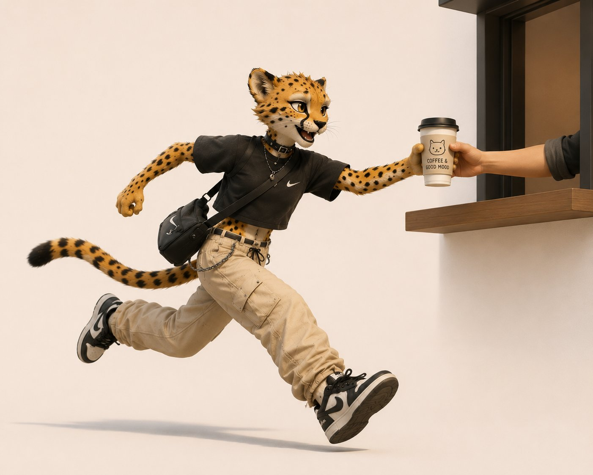
Кофейне нужен был узнаваемый персонаж: дерзкий, городской, «свой». Гепард в карго и кроп-топе с подписью «more espresso less depresso» — характер, который хочется встретить у стойки.
Десятки зарисовок: эмоции, позы, ракурсы, реквизит. На этом этапе ищу не геометрию, а характер — как гепард двигается, как держит стакан, как улыбается.
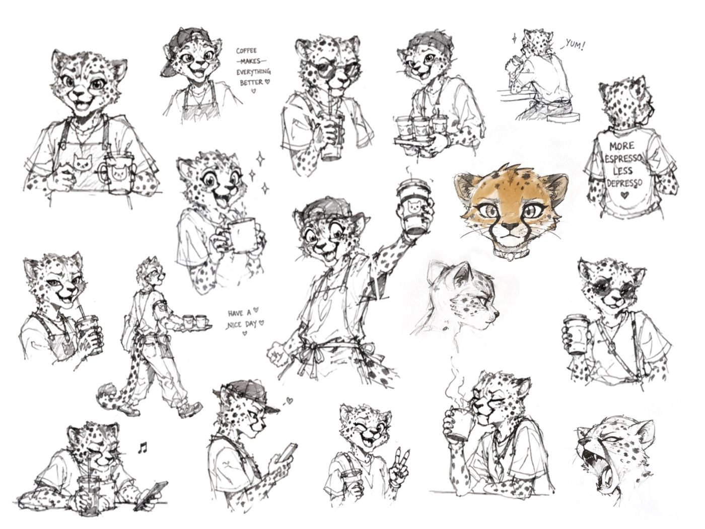
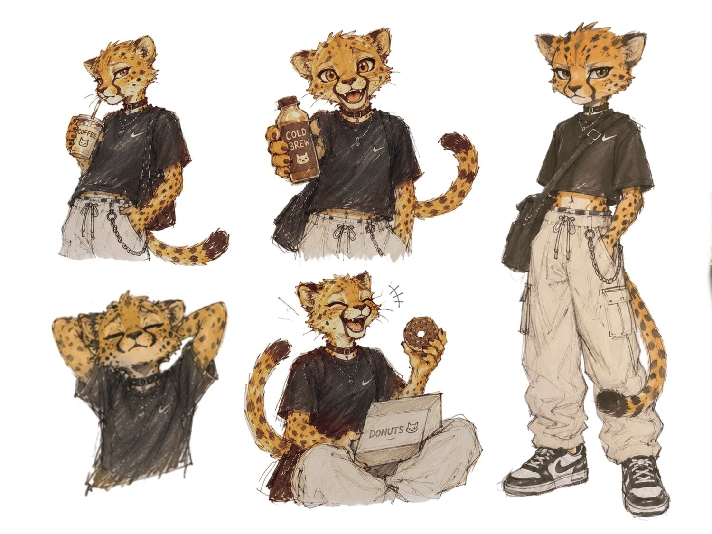
Финальный character sheet: костюм, цветовая палитра меха и одежды, набор выражений. Это карта, по которой собирается 3D-модель.
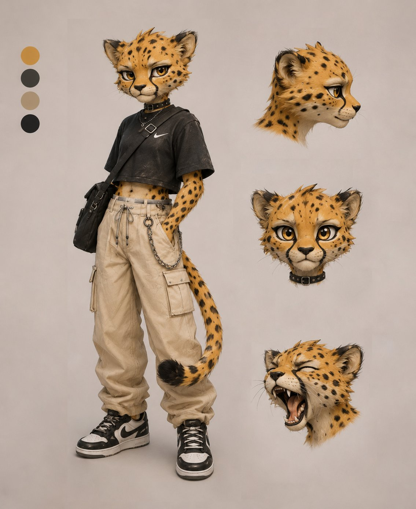
Прежде чем рендерить финал, я собрала концепт-сцену через нейросеть — гепард на бегу хватает стакан «grab & go». Быстрый способ проверить характер в реальном контексте: витрина, стойка, фирменный стакан.
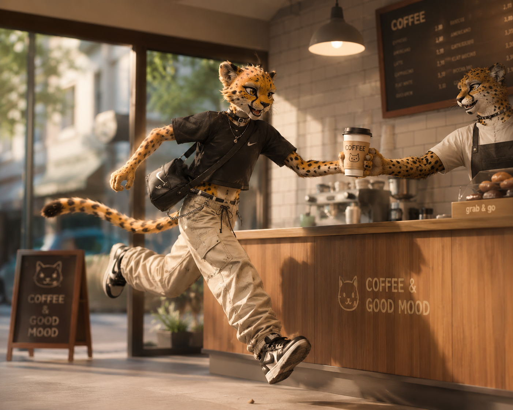
Серия 3D-рендеров для соцсетей, упаковки стаканов и оформления точки. Один характер — много ситуаций.
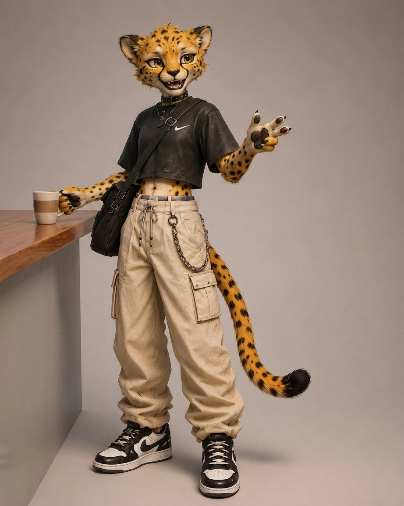
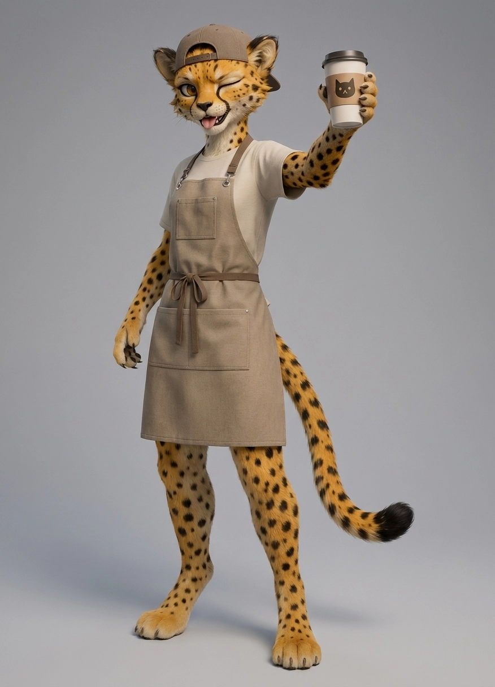
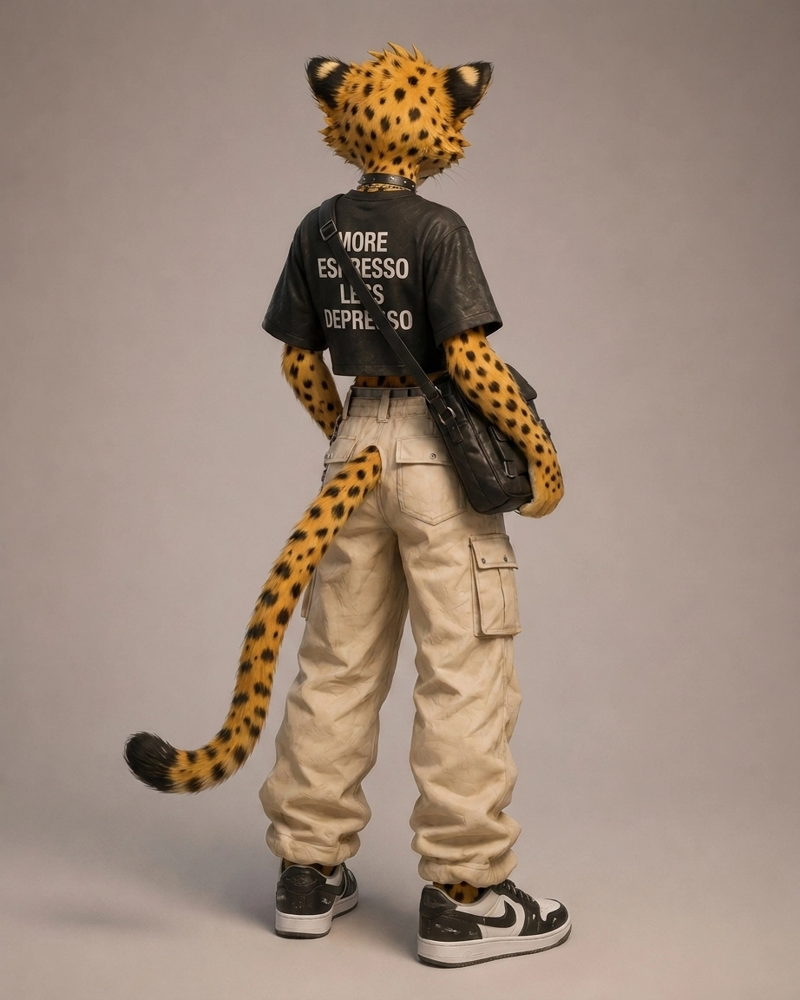
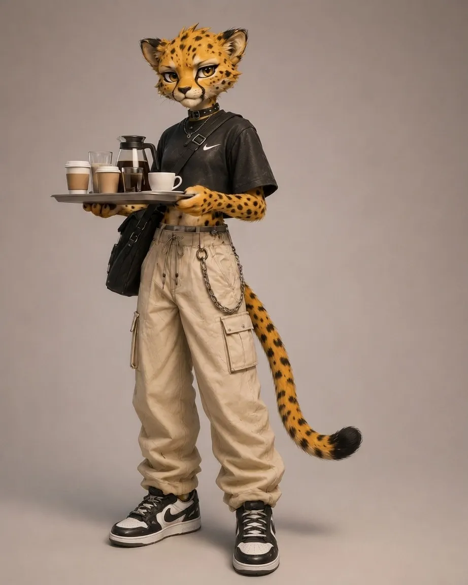
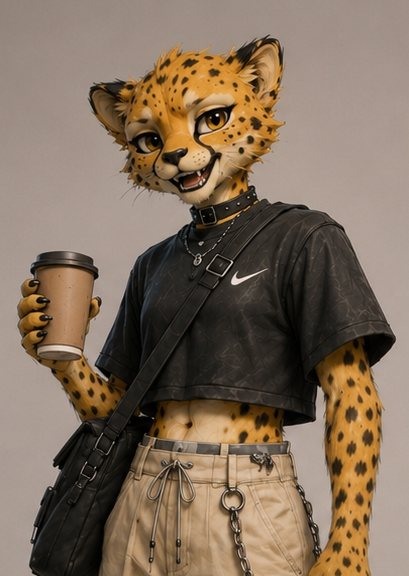
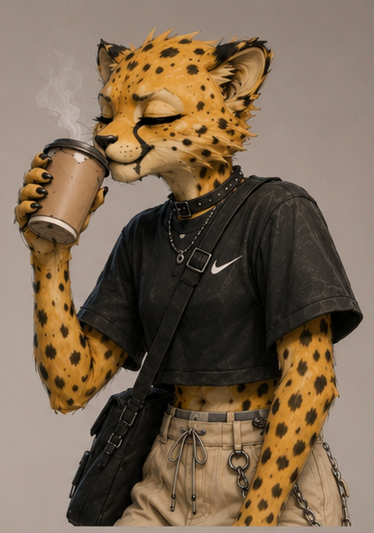
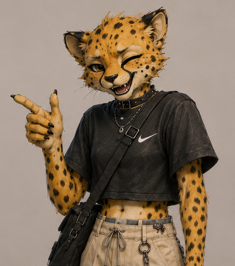
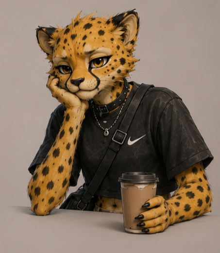
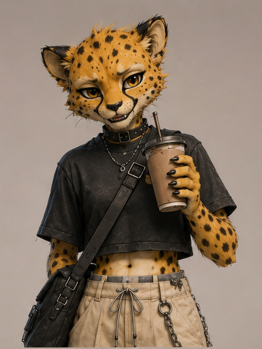
Один характер — много ситуаций: серия рендеров для соцсетей, упаковки стаканов и оформления точки продаж.